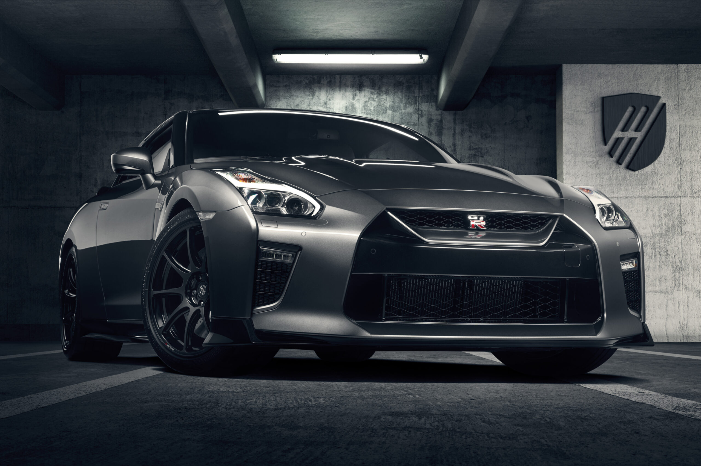
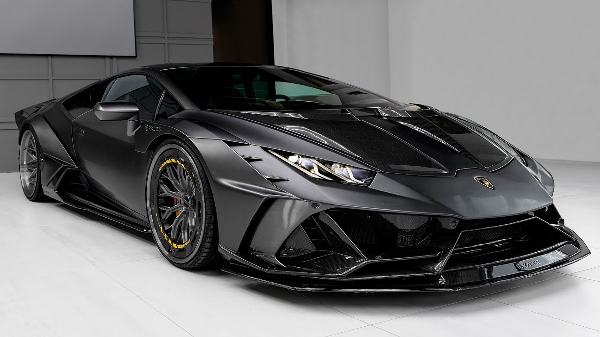
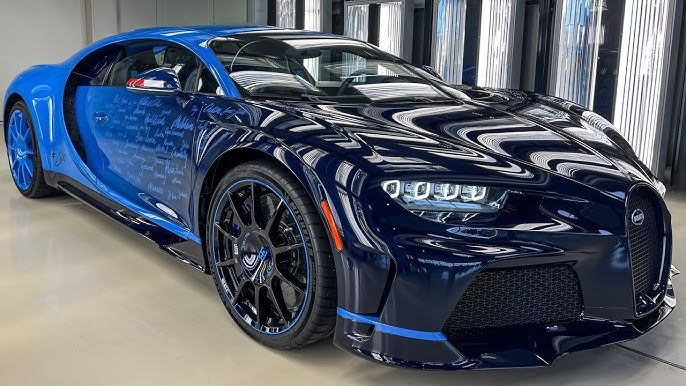
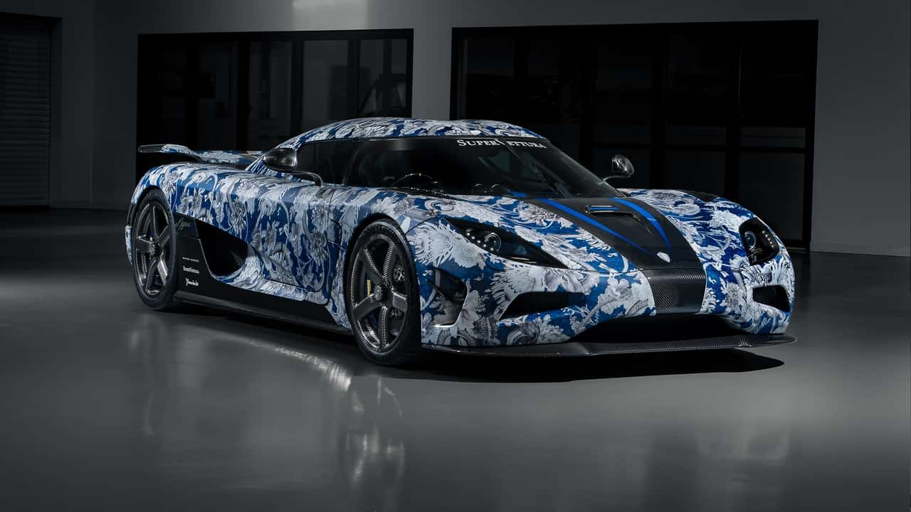
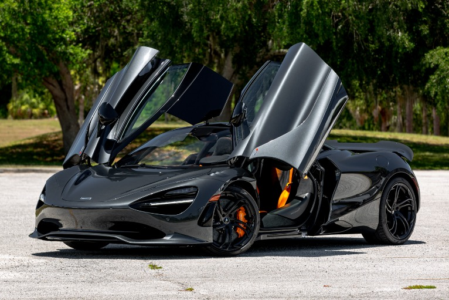

Nissan gtr
Generations of the Nissan GT-R:
- R32 (1989–1994): Known as the "Godzilla," the R32 is credited with putting the GT-R name on the map. It featured an advanced ATTESA E-TS all-wheel-drive system and Super-HICAS (four-wheel steering), which helped it dominate motorsport events, especially in Japan.
- R33 (1995–1998): The R33 improved upon the R32 in terms of stability and refinement while retaining much of the performance. It is known for having better aerodynamics and a more comfortable ride compared to its predecessor.
- R34 (1999–2002): The R34 is perhaps the most beloved among enthusiasts, known for its aggressive styling and technology. It had a more refined version of the RB26DETT engine, a six-speed Getrag manual transmission, and advanced features like multi-function displays on the dashboard.

Lamborgini SVJ
Performance and Engine:
- Engine: The Aventador SVJ is powered by a naturally aspirated 6.5-liter V12 engine, the same powerplant used in the standard Aventador but tuned for more power and higher performance.
- Power Output: It produces an impressive 759 horsepower (770 PS) and 720 Nm (531 lb-ft) of torque. This makes the SVJ one of the most powerful naturally aspirated V12 engines ever put into a production car.
- 0-60 mph (0-100 km/h): The SVJ accelerates from 0 to 60 mph in just 2.8 seconds, making it one of the fastest cars in the world.

Bugatti
The Origins of Bugatti
- Founded by Ettore Bugatti: Bugatti was founded in 1909 by Ettore Bugatti in Molsheim, Alsace, a region that was then part of the German Empire (today it's part of France). Ettore Bugatti, an Italian-born engineer and automotive designer, had a vision of creating cars that combined performance, design, and luxury in a way that had never been seen before.
- Early Success: Bugatti quickly became renowned for its advanced engineering and craftsmanship. The Bugatti Type 35, introduced in 1924, is one of the most famous race cars of all time, winning over 2,000 races during its career and establishing the brand’s racing heritage.
- Design Philosophy: Ettore Bugatti’s motto was “Nothing is too beautiful, nothing is too expensive,” reflecting his commitment to both aesthetics and performance. This philosophy still holds true today in the brand’s vehicles, with an emphasis on attention to detail, elegance, and engineering excellence.

Koenigsegg
History of Koenigsegg
- Founder: Christian von Koenigsegg, a Swedish entrepreneur, founded Koenigsegg Automotive AB in 1994 with the vision of creating the world’s best hypercars. At just 22 years old, he embarked on a journey to build high-performance cars that could compete with the world’s best, and eventually surpass them in both speed and technological innovation.
- First Model: The first production car was the Koenigsegg CC (introduced in 1996), followed by the CC8S in 2002, which marked the company’s entry into the hypercar world. However, it was the development of their next generation of cars that would truly cement Koenigsegg's status in the automotive world.
- The CC8S was the first production car from Koenigsegg, and it made a significant impact in the automotive world. The CC8S was a supercar with a 5.0-liter V8 engine producing 655 horsepower and was capable of reaching speeds of up to 240 mph (386 km/h).

McLaren
The Origins of McLaren
- Bruce McLaren: The company’s story begins with Bruce McLaren, a talented New Zealand-born racing driver and engineer who founded McLaren Motor Racing in 1963. McLaren became one of the most successful teams in Formula 1 history, with multiple drivers' and constructors' championships
- Motorsport Roots: McLaren's passion for racing remains integral to the brand's philosophy. Many of the technologies developed for McLaren’s Formula 1 team have trickled down to their road cars, making McLaren’s vehicles extremely lightweight, aerodynamic, and performance-oriented.
- McLaren Automotive: In 2010, McLaren launched McLaren Automotive as a standalone division dedicated to producing road cars, and it introduced its first road-going model, the McLaren MP4-12C, which established the brand's reputation in the hypercar market.
